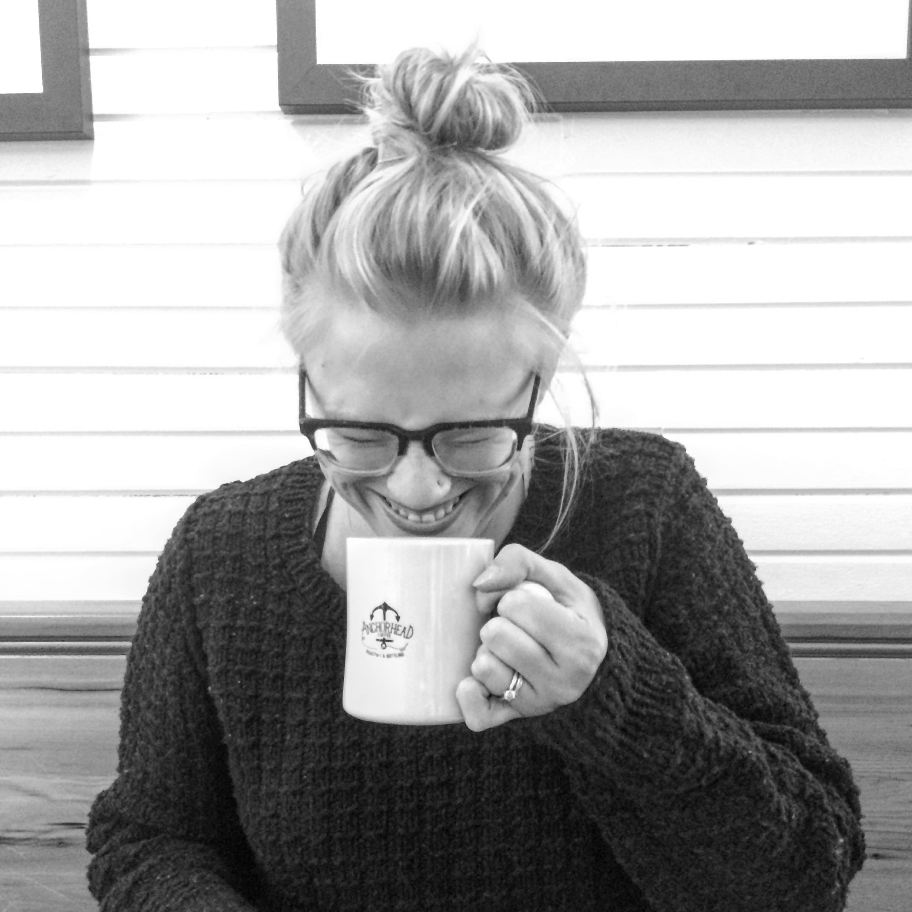

✨ about lauren ✨
- ☂ Seattle-area resident for 10 years
- 📅 graduate of Cohort 6 at Ada Developers Academy
- 💻 former barista/camp counselor/fundraiser/marketer/emailer/product manager
- 😎 current software engineer in Fremont, Seattle
- likes: cats, running long distances early in the morning, knitting sweaters, writing Python
- dislikes: chapped lips, waiting in long lines, hot coffee in the summer
- languages: Python, Ruby, Javascript, some Typescript
- frameworks: Django, Flask, Serverless, Rails, Backbone.js, some React
- technologies: Amazon Web Services (Lambda, Cloudwatch, Elasticsearch)